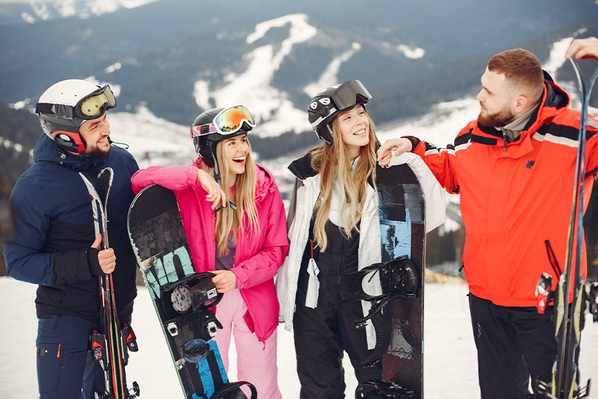

Aspen, Colorado, USA
Aspen je svetski poznata ski destinacija, koja vam pruza cetiri najbolja ski centra u svetu, Aspen planina, Aspenski visovi, Buttermilk i Snowmass.
Takodje ima razvijenu kulturnu scenu i luksuzni smestaj. Tako da ako zelite zimske carolije i razne sadrzaje ovo je pravi izbor za vas!
Samoni Mon Blan, Francuska
Chamonix-Mont-Blanc
Situiran u francuskom delu alpskih planina, Samoni je poznat po svojim izazovnim skijaskim stazama, sjajnim pogledima i ikonicni Mon Blan (najvisi vrh zapadne Evrope)
Sjajan je izbor za ljude koji vec imaju dosta iskustva sa planinarenjem i skijanjem, ako ste to vi ovo je sjajan izbor za vas!

Cermat, Svajcarska
Zermatt
Cermat je prava slika Svajcarske zimske idile, nalazi se u podnozju planine Materhorn. Pruza sjajne prilike za skijanje i snoubording.
Sam put do Cermata je vredan svake pare a to vas moze uveriti slika iznad!
| Zanima vas zimska oprema? E pa kod naseg sponzora se mozete opremiti veoma lako! => |
 |